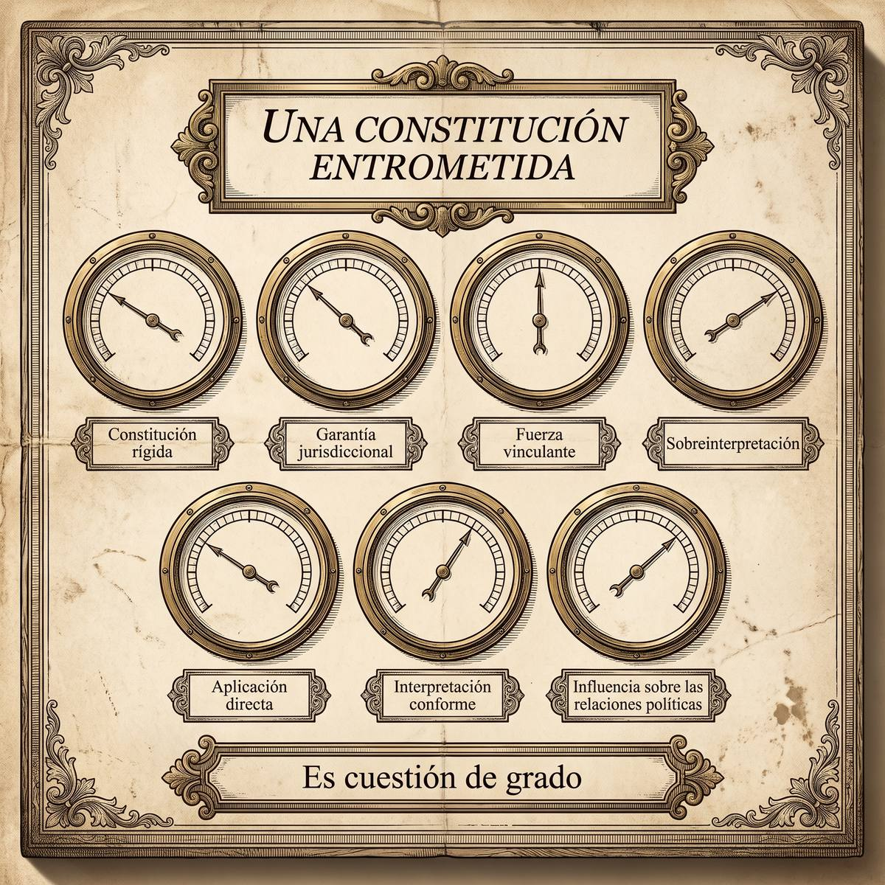

Filosofía del Derecho
Subpuntos 3.1.1 a 3.1.3 · Constitución, Constitucionalización y Constitucionalismo · Noción del Neoconstitucionalismo · Clases de Neoconstitucionalismo
La Constitución entrometida
Guastini llama a la Constitución del Estado constitucional «invasora» y «entrometida», y el adjetivo no es un reproche: describe con precisión qué hace cuando funciona. Este apartado distingue tres palabras que suelen confundirse, mide en siete grados cuánto ha penetrado una constitución en un ordenamiento y termina en la discusión que sigue abierta: si el neoconstitucionalismo superó la vieja polémica entre iusnaturalismo y positivismo, o si es una de las dos con ropa nueva.
Prof. Carlos Eduardo Chica-Villacís Docente autor · Universidad Católica de Cuenca
a · Tres palabras que no son sinónimas
Conviene empezar deslindando, porque las tres se usan como si dijeran lo mismo y dicen cosas distintas.
La Constitución es una norma jurídica suprema y obligatoria de contenido material. No solo organiza el poder —esa es su dimensión orgánica— sino que reconoce un sistema denso de principios y derechos fundamentales que rigen tanto las relaciones públicas como las privadas. Romero Martínez, exponiendo a Barroso, lo formula así: la Constitución deja de ser un documento político de buenas intenciones y se convierte en norma plenamente exigible, cuya supremacía condiciona la validez de todo lo demás.
La constitucionalización es un proceso, no un estado. Carbonell, exponiendo a Guastini, la define como aquel proceso al término del cual el ordenamiento resulta enteramente impregnado por las normas constitucionales. Y añade una precisión que ahorra discusiones estériles: no es bipolar, no se trata de estar o no estar constitucionalizado. Es cuestión de grado.
El constitucionalismo es un movimiento político e ideológico histórico que persigue limitar el poder estatal y garantizar las libertades frente al despotismo. Romero Martínez, exponiendo a Fioravanti, marca el contraste: frente al Estado de derecho legalista del siglo XIX, donde la ley del Parlamento era soberana e incondicionada, el constitucionalismo contemporáneo asienta el Estado constitucional de derecho, donde la ley queda subordinada a los contenidos y valores de la Constitución.
b · Siete condiciones para medir el grado
Si la constitucionalización se mide en grados, hace falta con qué medirla. Carbonell recoge las siete condiciones que Guastini enumera, y conviene leerlas como una escala, no como una lista de requisitos que se cumplen o no. En las siete es cuestión de grado, y del conjunto depende que tengamos delante una constitución entrometida o un texto decorativo.
| Condición | Qué significa |
|---|---|
| Constitución rígida | No puede modificarse por el procedimiento legislativo ordinario. El grado sube cuando además hay principios intangibles, que no puede tocar ni la reforma constitucional |
| Garantía jurisdiccional | Existe control judicial que impone la supremacía constitucional sobre la ley ordinaria |
| Fuerza vinculante | Todas las normas constitucionales obligan y son aplicables, sin relegar los derechos sociales a meras normas programáticas |
| Sobreinterpretación | El intérprete no se limita a la letra: extrae del texto normas implícitas que alcanzan casi cualquier aspecto de la vida social |
| Aplicación directa | Cualquier juez puede aplicar la Constitución para resolver un caso, incluso entre particulares, sin esperar una ley de desarrollo |
| Interpretación conforme | Ante una ley con varios significados posibles, el juez escoge el compatible con la Constitución en lugar de anularla |
| Influencia sobre las relaciones políticas | Los conflictos entre órganos se dirimen ante los tribunales, y los jueces no se abstienen invocando que son cuestiones políticas |
La cuarta merece un momento de atención porque es la más resbaladiza. La sobreinterpretación es lo que permite que una constitución de doscientos artículos regule situaciones que sus redactores nunca imaginaron. Es también lo que permite que dos jueces igualmente competentes extraigan del mismo texto normas implícitas incompatibles.

c · De dónde viene la palabra
El término tiene fecha, lugar y autora. Núñez Leiva, exponiendo a Comanducci, explica que la etiqueta la acuñó la Escuela Genovesa de Teoría del Derecho para clasificar y someter a examen crítico un conjunto de tesis postpositivistas. El uso inaugural fue una ponencia de Susanna Pozzolo en 1997, en el XVIII Congreso Mundial de la IVR celebrado en Buenos Aires, publicada al año siguiente en Doxa.
Conviene subrayar el detalle: la palabra nace desde fuera y con intención crítica. No se la pusieron sus partidarios; se la pusieron quienes querían examinarla. Es una etiqueta puesta desde fuera, y eso condiciona cómo debe leerse. Pozzolo la empleó para designar un modo peculiar de acercarse al Derecho que compartían autores como Alexy, Nino y Zagrebelsky, y lo hizo articulándolo en cuatro oposiciones.
Primera, principios frente a reglas: las reglas se identifican por su origen formal, los principios valen por su contenido material. Segunda, ponderación frente a subsunción: la ponderación sopesa principios en conflicto y establece una jerarquía móvil para el caso, mientras la subsunción encaja un hecho en el supuesto cerrado de una regla y deduce una consecuencia invariable. Tercera, Constitución frente a independencia del legislador: el legislador deja de ser absoluto. Cuarta, jueces frente a libertad del legislador: al juez se le atribuye un papel activo en la realización de los derechos fundamentales.
![Lámina cuadrada a tinta sepia. Sobre una mesa de gabinete reposa un espécimen de latón formado por cuatro pares de platillos montados en una misma columna vertical, uno sobre otro. De la columna cuelga, atada con un cordel de nudo bien visible, una etiqueta de cartón rectangular con la esquina perforada, ladeada por su propio peso y claramente ajena a la pieza. Junto al espécimen, una lupa de mango largo apoyada en la mesa, sin ninguna mano que la sostenga. A la derecha, cuatro cartelas nombran cada par de platillos.](Ilustraciones/B2_lamina14_etiqueta_desde_fuera.jpeg)
d · Las cinco tesis, y lo que arrastran
Núñez Leiva empieza deslindando: el neoconstitucionalismo no es el Nuevo Constitucionalismo Latinoamericano, doctrina de contrapoderes centrada en la soberanía popular, ni el constitucionalismo popular estadounidense, que nació como reacción al activismo judicial conservador. Hecho el deslinde, identifica cinco tesis compartidas.
La separación del Derecho respecto de la ley. El Derecho ya no se reduce a la ley estatal. Prieto Sanchís lo llama rematerialización constitucional: la Constitución se satura de valores y directrices que desplazan a la ley ordinaria a un plano subalterno. La validez de una ley deja de depender solo de quién la dictó y pasa a depender también de su conformidad sustancial con la Constitución.
Los principios como criaturas de la moralidad. La expresión es de García Figueroa y nombra bien el problema: los principios incorporan exigencias éticas al sistema y carecen de supuesto de hecho cerrado. De ahí sale la derrotabilidad, la propiedad por la cual la obligatoriedad de una regla puede quedar desplazada ante excepciones implícitas basadas en razones de justicia no previstas de antemano.
La expansión de las lagunas axiológicas. Una laguna axiológica no es un vacío: es una situación en que sí existe norma aplicable, pero aplicarla resulta injusto porque el legislador omitió considerar una propiedad moralmente relevante del caso. Núñez Leiva, exponiendo a Guastini, usa una imagen que vale la pena retener: en el Estado constitucional, la Constitución opera como una máquina de producción de lagunas axiológicas, porque habilita al juez a inaplicar la ley e integrar el hueco con principios.
La concepción argumentativa del Derecho. Si se pierde certeza, hace falta un método que legitime la decisión judicial. Prieto Sanchís sitúa ahí la ponderación. Zagrebelsky pide una ciencia jurídica práctica y dúctil, capaz de sostener la coexistencia de valores plurales en tensión.
Un modelo militante de juez. El juez deja de ser la boca de la ley y pasa a ser, según Atienza y Zagrebelsky, coautor del Derecho y garante de esa coexistencia.
Apartado elaborado a partir de Núñez Leiva (2015). Prieto Sanchís, García Figueroa, Guastini, Zagrebelsky, Atienza, Viciano y Martínez Dalmau llegan expuestos por él.e · Las tres clases de Comanducci
Comanducci hace con el neoconstitucionalismo lo que Bobbio hizo con el positivismo: partirlo en tres para poder aceptar una parte y rechazar el resto. La deuda es explícita.
El neoconstitucionalismo teórico describe el proceso de constitucionalización de los sistemas contemporáneos. Comanducci distingue dentro de él una versión débil, que lo considera una continuación del iuspositivismo con el objeto modificado, y una fuerte —Ferrajoli, Zagrebelsky— que reclama un cambio metodológico radical y una ciencia jurídica normativa. Contra esta última dirige su crítica más técnica: al exigir que la ciencia jurídica evalúe la validez sustancial de las leyes y denuncie lagunas, Ferrajoli derivaría el deber ser del ser y colapsaría la distinción entre describir y prescribir.
El neoconstitucionalismo ideológico es la toma de posición que valora positivamente ese proceso y propugna ampliarlo, priorizando la garantía de los derechos sobre la mera limitación del poder. Comanducci lo califica de variante moderna del positivismo ideológico: donde antes había obligación moral de obedecer la ley, ahora la hay de obedecer la Constitución. Y le objeta que el uso desmedido de principios vagos y de la ponderación reduce la certeza y aumenta la discrecionalidad, hasta que los jueces imponen su concepción particular de la justicia con ropaje argumentativo.
El neoconstitucionalismo metodológico sostiene que hay conexión necesaria entre derecho positivo y moral, con los principios haciendo de puente. Comanducci lo ataca en tres planos: como descripción es falso, porque los jueces justifican sus fallos en normas jurídicas; como tesis conceptual es una tautología, si se define de antemano toda justificación última como moral; y como norma es peligroso, porque obligar al juez a justificar en sus propias creencias morales aumenta la arbitrariedad allí donde no hay moral común.
Apartado elaborado a partir de Comanducci (2002). Bobbio, Ferrajoli y Zagrebelsky llegan expuestos por él.f · La réplica de Moreso
Moreso responde a las tres objeciones, y lo hace no para corregir un error sino para sostener que el neoconstitucionalismo es compatible con un positivismo metodológico bien entendido.
Sobre la crítica al teórico, defiende la ciencia jurídica normativa de Ferrajoli y la considera inocua. Explicar que la validez de una ley depende de su conformidad sustancial con los principios constitucionales, o denunciar que el legislador omitió dictar la ley necesaria para garantizar un derecho, es una operación dogmática corriente que describe un sistema jerárquico. De ahí su conclusión: el neoconstitucionalismo teórico es, sencillamente, el positivismo jurídico de nuestros días.
Sobre la crítica al ideológico, niega que exija obediencia moral ciega. Un neoconstitucionalista racional puede juzgar injusta una norma constitucional y criticarla desde fuera; Moreso pone como ejemplo la denegación del voto y las trabas a la nacionalidad que sufren los inmigrantes en democracias europeas, injusticia flagrante y constitucionalmente permitida. Y recuerda que el propio Dworkin aclaró que no leía la Constitución de su país como si contuviera todas sus preferencias morales.
Sobre el metodológico, sostiene que la conexión entre derecho y moral no es conceptualmente necesaria sino contingente: depende de que una constitución incorpore o no pautas morales en sus criterios de validez. Por eso es compatible con el positivismo incluyente. Y para la justificación defiende la unidad de la razón práctica, apoyándose en la secuencia de cuatro etapas de Rawls —posición original, etapa constitucional, etapa legislativa y aplicación judicial— para mostrar que, en una teoría ideal, el razonamiento jurídico es una especie del razonamiento moral.
Apartado elaborado a partir de Moreso (2003). Ferrajoli, Dworkin y Rawls llegan expuestos por él. Los ejemplos penal y civil son suyos.g · Lo que sigue sin resolverse
Queda por decir lo más importante, y conviene decirlo sin adornos: el neoconstitucionalismo no ha superado la polémica entre iusnaturalismo y positivismo. Presentarlo como síntesis superadora es tomar partido en una discusión que sigue abierta, no describir un consenso.
Los dos autores que acaban de leerse discrepan justamente en eso. Para Pozzolo y Comanducci, cuando el neoconstitucionalismo defiende una conexión necesaria entre derecho y moral no está superando nada: es una variante contemporánea del iusnaturalismo metodológico, y compromete tanto la objetividad de la ciencia jurídica como el garantismo del principio de legalidad. Para Moreso, en cambio, puede entenderse coherentemente como positivismo incluyente, que mantiene la separación conceptual —el derecho puede ser injusto— y admite que la moralidad se incorporó de forma positiva y contingente en las constituciones de posguerra.
Las dos tradiciones siguen teniendo defensores activos disputando los fundamentos de la validez y de la interpretación. Mientras eso siga así, la pretensión de superación es una posición más dentro de la discusión, no su final.
Apartado elaborado a partir de Comanducci (2002), Moreso (2003), Pozzolo (2015) y Núñez Leiva (2015).Bajo el modelo legalista del siglo XIX, el abogado buscaba la solución en la letra de los códigos y daba por hecho que la Constitución era un manifiesto lejano dirigido a los poderes públicos. En el Estado constitucional, tres cosas cambian de golpe: hay que examinar si la ley aplicable al caso es conforme con los derechos fundamentales y pedir interpretación conforme cuando no lo sea; se puede invocar directamente principios constitucionales ante cualquier juez, alegando laguna axiológica o pidiendo la derrotabilidad de una regla cuya aplicación estricta produciría una injusticia intolerable; y la técnica de litigación se desplaza del silogismo a la argumentación, con la ponderación y la proporcionalidad como herramientas de trabajo.
Dicho de otro modo: el abogado deja de ser quien encuentra la norma aplicable y pasa a ser quien argumenta cuál debe prevalecer.
Midan el grado, no repitan la etiqueta
«De este apartado quiero que se lleven una herramienta, no un vocabulario. La herramienta son las siete condiciones de Guastini, y sirve para algo que casi nadie hace: medir en vez de proclamar.
Escucharán decir que vivimos en un Estado constitucional como si fuera una descripción evidente. Pregúntense entonces, condición por condición, en qué grado. ¿Hay rigidez efectiva o la reforma es accesible a la mayoría de turno? ¿La garantía jurisdiccional funciona o depende de quién integra el tribunal? ¿Los derechos sociales son exigibles ante un juez o siguen tratándose como programáticos? ¿Los jueces aplican la Constitución directamente entre particulares, o esperan siempre una ley de desarrollo? Verifiquen ustedes cada respuesta con el articulado y con jurisprudencia real antes de sostenerla; yo indicaré en la sesión qué fuentes consultar.
Y una advertencia sobre la palabra. Nació en 1997, en boca de quienes querían examinar críticamente esas tesis, no de quienes las defendían. Eso debería bastar para desconfiar de quien la usa como elogio automático o como insulto. Comanducci y Moreso, que son los dos que acaban de leer, discrepan en casi todo salvo en una cosa: los dos argumentan. Esa es la parte que quiero que imiten.»
Referencias
- Carbonell, M. (s. f.). La constitucionalización del ordenamiento jurídico. Centro de Estudios Jurídicos Carbonell.
- Comanducci, P. (2002). Formas de (neo)constitucionalismo: un análisis metateórico. Isonomía, 16, 89–112.
- Moreso, J. J. (2003). Comanducci sobre neoconstitucionalismo. Isonomía, 19, 267–282.
- Núñez Leiva, J. I. (2015). Explorando el neoconstitucionalismo a partir de sus tesis principales. Ius et Praxis, 21(1), 315–343.
- Pozzolo, S. (2015). Apuntes sobre «neoconstitucionalismo». En Enciclopedia de Filosofía y Teoría del Derecho (vol. 1). Instituto de Investigaciones Jurídicas, UNAM.
- Romero Martínez, J. M. (2015). El neoconstitucionalismo y los principios en el derecho (pp. 5–36). Instituto de Investigaciones Jurídicas, UNAM.